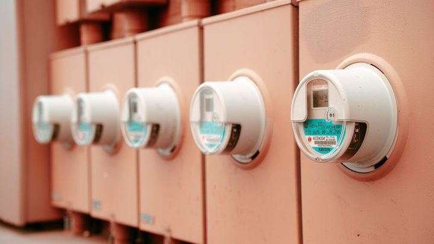
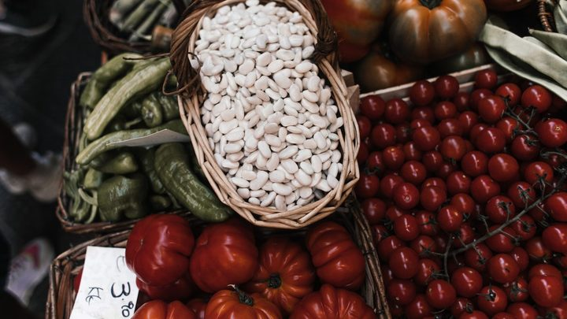
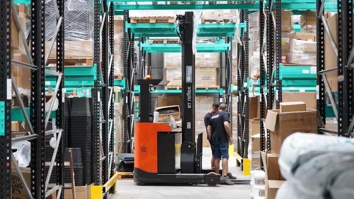
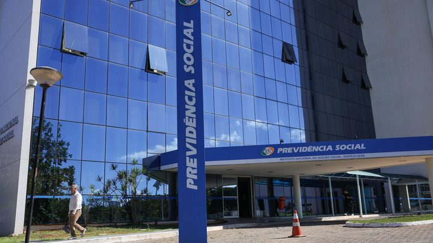
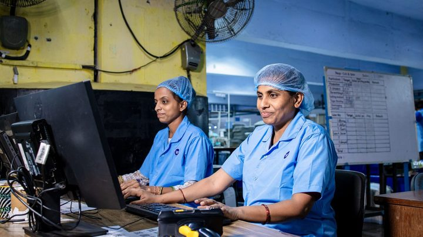
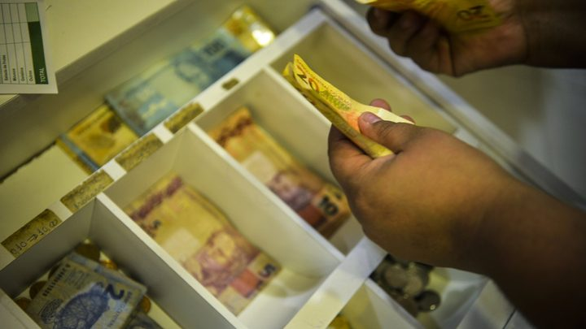
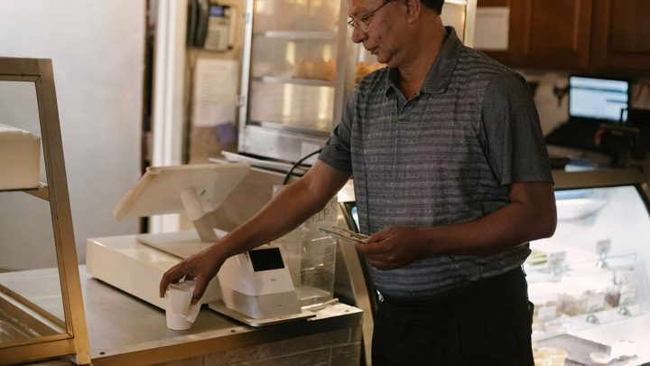
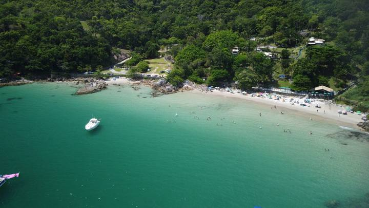

Economia brasileira cresce 0,5% no trimestre, mas o comércio fica parado e as famílias gastam menos
O IBGE divulgou o PIB do segundo trimestre de 2026. A agropecuária puxou o resultado, o comércio ficou em zero e o consumo das famílias caiu 0,4%.
Início›Editorias
Metro quadrado, crédito e o ciclo imobiliário do litoral mais valorizado do Brasil.
38 matérias
O IBGE divulgou o PIB do segundo trimestre de 2026. A agropecuária puxou o resultado, o comércio ficou em zero e o consumo das famílias caiu 0,4%.
A regra do Banco Central vale desde 1º de setembro. O prazo era de 30 dias e passou para 80, e a mudança mira o golpe que faz o comerciante perder o dinheiro duas vezes.
A previsão entrou no Orçamento de 2027 enviado ao Congresso. A cobrança começa no ano que vem, mas a regra de funcionamento ainda depende dos parlamentares.
Pesquisa do Cetic.br mostra que 32% dos usuários de internet com 16 anos ou mais passaram por tentativa de golpe. O aplicativo de mensagem é o caminho em 84% dos casos.
Uma live por edital, sempre às 19h, de segunda a quarta. O tira-dúvidas presencial é em 9 de setembro, às 18h30, no Espaço Cultural Nelson Santos.
A proposta da jornada vai à Comissão de Constituição e Justiça do Senado na quarta. A medida provisória que derruba o imposto sobre compras de até US$ 50 é votada na segunda e perde a validade em 8 de setembro.
Vale para renda de até cinco salários mínimos e dívida atrasada entre 91 dias e dois anos. O acordo é fechado direto no banco, até 31 de agosto.

Brasil · EnergiaQuinto mês seguido na mesma faixa, com acréscimo de R$ 1,885 a cada 100 kWh. O motivo é o período seco.
A Pesquisa Anual de Serviços do IBGE contou 15,9 milhões de pessoas ocupadas em 2024, com média de 2,2 salários mínimos.
O IBGE apurou 103,3 milhões de pessoas ocupadas e 39,4 milhões com carteira assinada. A informalidade subiu de 37,2% para 37,5%.

Brasil · EconomiaO IPCA-15 veio negativo por causa do Bônus de Itaipu na conta de luz e da comida mais barata. Em 12 meses o índice acumula 4,24%.
 Brasil · Educação
Brasil · EducaçãoA inscrição é gratuita e vai até as 23h59 de 27 de agosto, pelo Portal Único de Acesso ao Ensino Superior. São 471.304 bolsas no semestre, sendo 219.725 integrais.
O Desenrola Fies 2026 alcança contrato firmado até 2017 e em amortização em 4 de maio. A negociação é direto com o Banco do Brasil ou com a Caixa.
São R$ 120 a mais que os R$ 1.621 de hoje, alta de 7,4%. O valor final só sai em dezembro, com o INPC fechado até novembro.

Navegantes · TrabalhoA lista vai de consultor de vendas a montador naval, com efetiva, temporária, estágio, meio período e trabalho remoto.
São R$ 1,24 bilhão para 521.935 contribuintes. Quem não estiver na lista precisa tirar o extrato no e-CAC.

Brasil · EconomiaA Instrução Normativa 213 já está em vigor. O banco tem 20 dias para confirmar portabilidade e 7 dias úteis para informar o depósito. Autorizar por telefone está proibido.
 Brasil · Economia
Brasil · EconomiaA opção foi antecipada em quatro meses e acontece de 1º a 30 de setembro. No mesmo mês a empresa escolhe como vai recolher o IBS e a CBS.
São 60 músicos de 10 a 17 anos, da ONG Orquestrando a Vida. Em Bombinhas a entrada é gratuita, por ordem de chegada.

Brasil · TrabalhoAs informações alimentam o 6º Relatório de Transparência Salarial do Ministério do Trabalho. Quem deixa de informar duas vezes no ano fica sujeito a multa.
Levantamento da Quod aponta mais de 9 milhões de indícios de fraude no primeiro semestre. O celular foi o canal em 78% dos casos e o Pix, o caminho do dinheiro em 85%.
O texto reduz a jornada máxima para 40 horas por semana e cria dois dias de repouso remunerado. Aprovado na Câmara em maio, agora precisa de 49 senadores em dois turnos.
O bloqueio é automático, sai do cruzamento de CPF no Sigap e cumpre decisão do STF de novembro de 2024. Quem já tinha conta perde ela em até três dias.
 Itapema · Cultura
Itapema · CulturaSão três chamamentos com dinheiro federal da Aldir Blanc. Um deles paga bolsa de R$ 2,1 mil por mês a Mestras e Mestres das culturas tradicionais.
A Portaria nº 188 subiu o teto de R$ 150 mil para R$ 200 mil e abriu o Move Brasil para veículos híbridos. São R$ 30 bilhões em crédito.
O LIDERE é do CIM-AMFRI com o Sebrae/SC e atende os dez municípios do consórcio, Itapema entre eles. Encontros presenciais de 15 a 18 de setembro.
 Brasil · Economia
Brasil · EconomiaO Comando Nacional dos Bancários confirmou a paralisação em todo o país. A categoria pede 5% de aumento real e ainda não recebeu proposta dos bancos.
São 5 mil vagas, metade para mulheres negras, com aulas ao vivo a partir de 1º de setembro. No fim, 50 negócios recebem capital semente.

Brasil · TrabalhoSão R$ 5,2 bilhões para 4,1 milhões de trabalhadores, de R$ 136 a R$ 1.621. O prazo de saque vai até 30 de dezembro.

Brasil · EconomiaHoje a empresa pode pagar imposto só quando o dinheiro entra. Isso acaba. Numa cidade de comércio sazonal que vende muito parcelado, a diferença…
É o quarto mês seguido de queda. A comida ficou mais barata e a conta de luz, mais cara, o que muda conforme o que pesa mais no seu orçamento.
 Brasil · Economia
Brasil · EconomiaA agenda saiu nesta segunda e é nacional. Mas no litoral catarinense, onde 36,5% dos visitantes do verão vieram do exterior, a parte da interligação…
 Litoral · Economia
Litoral · EconomiaÉ um arranjo que quase ninguém explica: a iniciativa privada banca o projeto, o poder público executa a obra. Vale entender como funciona, porque a…
 Litoral · Economia
Litoral · EconomiaA pesquisa da Fecomércio SC sobre o verão de 2026 já saiu, e agosto é quando hotel, restaurante e comércio definem preço para a próxima temporada…
 Brasil · Economia
Brasil · EconomiaQuarto corte seguido, decisão unânime e um comunicado pedindo cautela. O que muda para quem financia imóvel na Costa Esmeralda.
 Brasil · Economia
Brasil · EconomiaTaxa básica de juros é assunto de Brasília, mas chega aqui pelo crédito imobiliário. Numa cidade com o segundo m² mais caro do Brasil, um quarto de…

Costa Esmeralda · EconomiaA cidade que sempre foi passagem para Bombinhas virou alvo de incorporadoras de luxo. A arrecadação multiplicou. E o alerta ambiental vem de quem…
 Região · Economia
Região · EconomiaDuas cidades vizinhas do litoral catarinense lideram o ranking nacional de preco de imovel. Vitória aparece em terceiro. E a média de São Paulo e do…